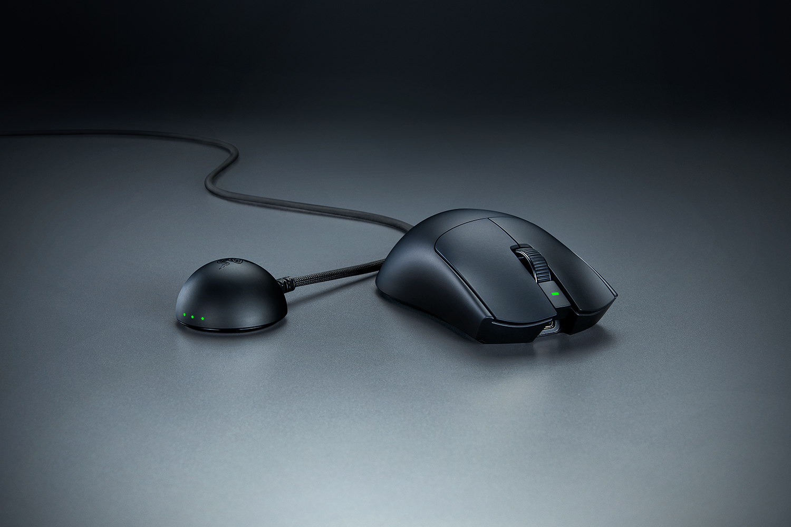
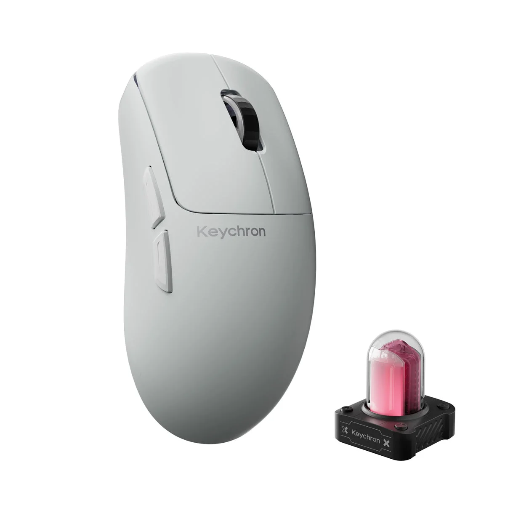

11 pieces. One collection.
My gear.
My little museum.
เมาส์ คีย์บอร์ด แผ่นรองเมาส์ และหูฟัง
ที่เก็บไว้ในคอลเลกชันของ raf3
Mice × 4Keyboards × 2Mousepads × 4Audio × 1
from my collection

Razer Viper V4 Pro my favorite!
G6 HE · Whitecollected by raf3.Meet the collection.
กดที่รูปเพื่อดูรายละเอียดของแต่ละชิ้น
อุปกรณ์ 11 ชิ้น
A little collection.
A lot of play.
เมาส์ คีย์บอร์ด แผ่นรองเมาส์ และหูฟังในคอลเลกชันส่วนตัว รวมทั้งหมด 11 ชิ้น โดยมี Razer Viper V4 Pro เป็นเมาส์ตัวโปรด
ภาพสินค้าจากผู้ผลิตและร้านค้า พร้อมเครดิตและลิงก์แหล่งที่มาในรายละเอียดแต่ละชิ้น